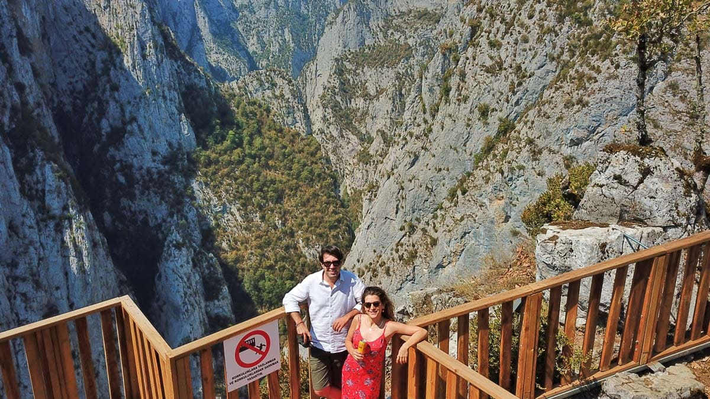
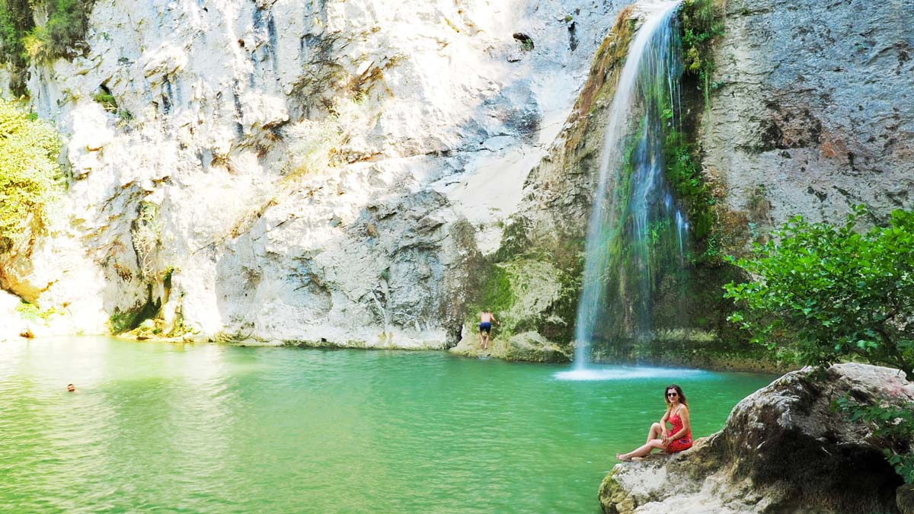
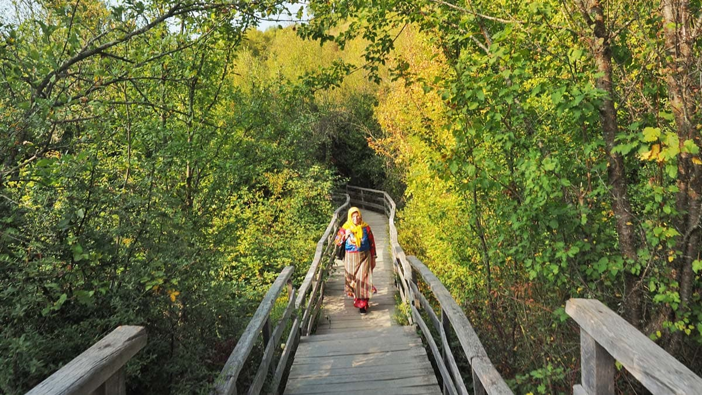
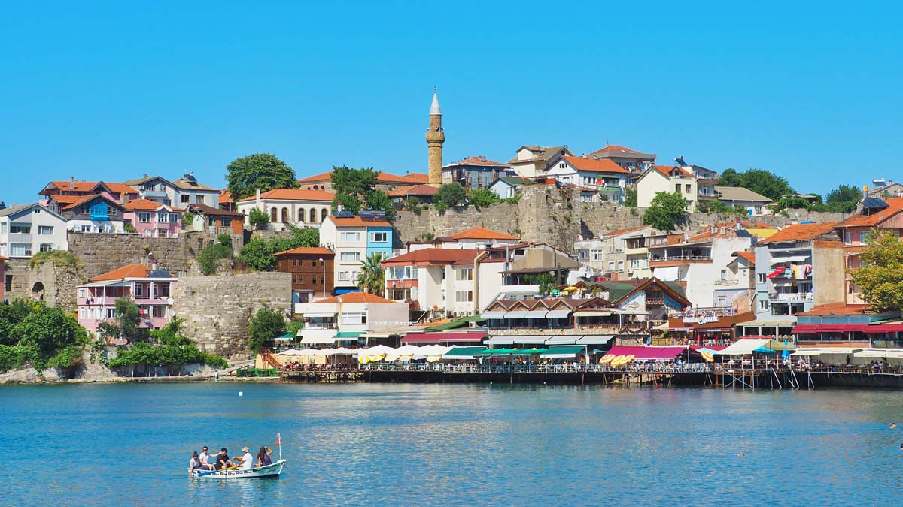

Valla Kanyonu, Kastamonu
Burası dünyanın en derin kanyonlarından biri olan Küre Dağları’ndaki Valla Kanyonu. Valla’da kanyon geçişi yapmak istiyorduk ama teknik olarak bizi aşan bir kanyon olduğunu öğrenince seyir terasından bakmakla yetindik. Tehlikeli bir geçiş olduğu için sadece izin alarak, profesyonel rehberle ve özel ekipmanlarla geçiş yapabiliyorsunuz. Bunun için de belirli bir tecrübeye ihtiyaç duyuluyor. Belki bir gün gerekli tecrübeyi edinince yolumuz buraya tekrar düşer.
Ilıca Şelalesi, Kastamonu
Ilıca Şelalesi, Horna Kanyonu’nun başlangıcını oluşturuyor. Burası, yaz aylarında içinde yüzebileceğiniz bir şelale. Çünkü şelalenin döküldüğü yerde geniş bir havuzcuk oluşmuş durumda. Bir de şelalenin yakınlarında Park Ilıca adlı ahşap bungalow evlerden oluşan bir kamp alanı var. Elbette çadırınızı kurup da konaklayabiliyorsunuz. Şelalenin sesiyle uykuya dalmak, uyanınca da suyuna girip yıkanarak güne başlamak kulağa oldukça keyifli geliyor.
Küre Dağları Milli Parkı, Bartın-Kastamonu
Küre Dağları Milli Parkı, Kastamonu ve Bartın sınırları kesişiminde kalan, içinde kanyonların, karstik mağara oluşumlarının, şelalelerin ve içinde çok çeşiti ekosistemlerin barındığı ormanların olduğu 37.000 hektarlık bir alana yayılan bir yeşil alan. Aynı zamanda burada yürütülen yaban hayatı koruma çalışmaları sayesinde, Küre Dağları Milli Parkı, Türkiye’nin ilk Pan Park’ı olma unvanına sahip. Milli parkta, görebileceğiniz belli başlı yerleri arasında, Drahna Vadisi, Valla Kanyonu, Loç Vadisi, Horna Kanyonu, Ulukaya Şelalesi, Ilıca Şelalesi, Pınarbaşı, Çatak Kanyonu gibi noktalar var.
Amasra, Bartın
Amasra, Kastamonu merkeze 200 kilometre 3 saat mesafede, Bartın’a bağlı bir kıyı ilçesi. Burada yapılacak en güzel şey balık ekmek yemek. Balık zaten yöreye mahsus bir lezzete sahip ama buna ek olarak inanılmaz güzel bir salatası var. Nasıl bir salata bu derseniz, içinde klasik marul, domates, salatalığın yanı sıra turp ve çeşitli sebzeler de bulunuyor.
Merkezde yapabilecekleriniz arasında ise şu maddeler var. Zaten hepsini gezmek, hepi topu 2 saatinizi alacaktır.
- 2013 yılında Unesco Dünya Mirasi Geçici Listesi’ne eklenmiş olan Amasra Kalesi‘nden Amasra’ya panaromik bir bakış atın.
- Tarihi, Roma dönemine dayanan Kemere Köprüsü‘nden Boztepe bölgesine geçerek, Ağlayan Ağaç’a geçin.
- Amasra’nın Tavşan Adası manzaralı noktası olan ve 300-350 yaşında bir ağacın olduğu Ağlayan Ağaç‘ın hemen yanındaki çay bahçesinde çay-kahve için.
- Kızılağaç, ıhlamur, şimşir, dişbudak, ceviz ve kiraz ağaçlarından, yöresel el yapımı ahşap eşyalar bulacağınız Çekiciler Çarşısı’na mutlaka gidin.
- Salı ya da Cuma Amasra merkezde olursanız, içinde envai çeşit reçeller, bölge kadınlarının el emeği ürünlerinin satıldığı köylü pazarını diğer adıyla Galla Pazarı’nı gezin.
- Bir zamanlar Bahriye Mektebi binası olan daha sonra Amasra Müzesi’ne çevrilmiş müzede, Amasra’nın Helenistik, Roma, Bizans ve Ceneviz dönemlerinden kalma kalıntıları ve etnografik kalıntıları görün.
- Kapanışı Lütfiye’den alışveriş yapın, üstüne de çay – kahve içerek yapın. Lütfiye, Amasra’dan çıkma, tamamen organik yöresel ürünleri satın alabileceğiniz aynı zamanda da taş duvarlı tarihi mağazasında oturup birer Türk kahvesi-çay içebileceğiniz çok hoş bir yer.